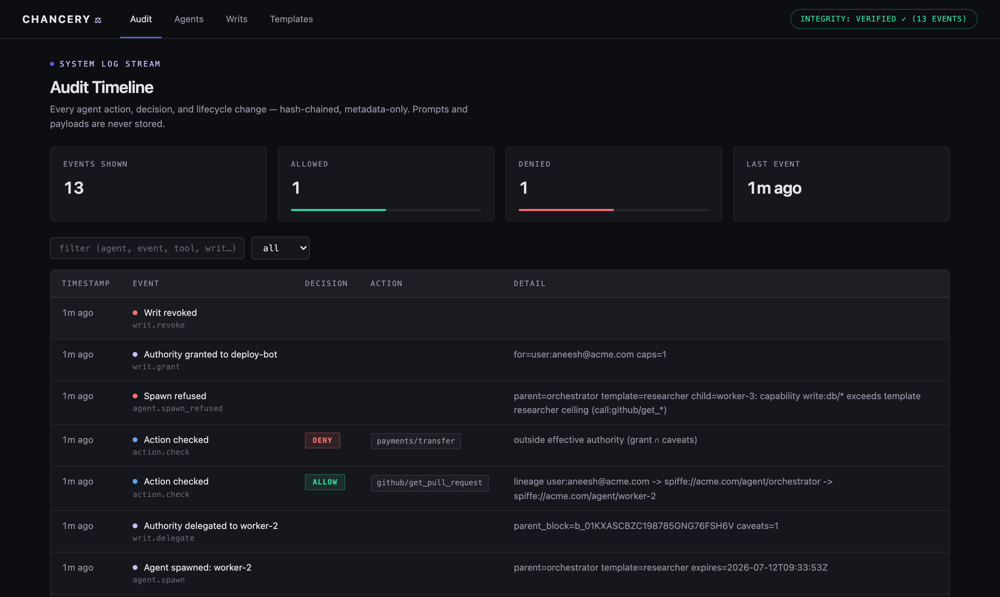
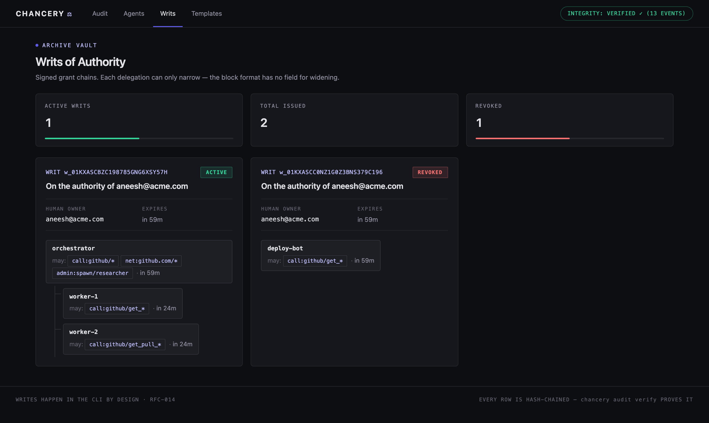

Your agents share one API key, can't be stopped mid-task, and write their own logs. Chancery gives them what every other privileged identity already has: their own identity, authority that can only narrow, revocation that lands on the next call, and an audit trail they can't write to.
Three failures show up in almost every agent deployment — and none of them are the model's fault.
Agents run on one API key. You can't revoke a single agent without breaking every other one, and you can't attribute an action to a specific agent after the fact.
Once an agent is wired to a tool, every capability that tool exposes is reachable. A successful injection doesn't just change output — it drives anything the agent can touch.
"Revoking" usually means waiting for a token to expire. And the record of what happened is written by the agent — the exact component you stopped trusting.
Chancery runs as an out-of-process proxy in the tool-call path. The agent holds no credentials and no server command — only a request that has to survive the gate.
Holds an identity document. No API keys, no server command, no way to skip the next step.
Decides every call against live state, then records it.
Its code identity is verified before every spawn. Secrets are injected here — never into the agent.
Because state is read per call, revocation takes effect on the next action — no propagation delay, no CRL, no cache to expire.
Agent → immutable content-addressed version → revocable running instance, each separately killable and owned by a named human. Change the prompt and it's a new version — "did this change since review?" is a hash comparison.
A writ is a signed chain where every delegation can only add restrictions. Widening isn't forbidden, it's unrepresentable: the block format has no field for it. Revoke any block and its whole subtree dies.
writ revoke takes effect on the agent's very next tool call —
mid-session, no restart, no waiting out a token's lifetime.
Credentials are AEAD-sealed and injected into the tool server's environment at spawn. Prompt injection cannot exfiltrate what was never in the context.
Pin an MCP server by image digest, whole install tree, or binary hash — drift
refuses to start. --confine adds an egress allow-list and a
read-only filesystem, enforced by the OS.
Hash-chained and metadata-only by schema: prompts, payloads, and arguments have nowhere to be stored. Written by the gate, so a compromised agent can't skip or forge an entry.
# authority under a named human, scoped and expiring
chancery writ grant --for user:you@acme.com --to deploy-bot \
--cap "call:github/get_*" --ttl 8h --task "review PR #123"
# hand a sub-agent LESS — never more; widening has no syntax
chancery writ delegate <writ-id> --to test-runner \
--caveat "call:github/get_pull_request"
chancery writ check <writ-id> --resource github/get_pull_request
ALLOW lineage: user:you@acme.com → deploy-bot → test-runner# seal a credential — the agent never sees this value
chancery secret put github-token --from-file ./token
# run the real server behind the gate
chancery mcp wrap --agent deploy-bot --writ <writ-id> \
--secret GITHUB_TOKEN=github-token -- npx @acme/github-mcp
get_pull_request → ALLOW forwarded · attributed · recorded
delete_repo → DENY never reaches the server
# preflight anything first — spawns nothing, pins nothing
chancery mcp wrap --agent deploy-bot --writ <id> --dry-run -- npx @acme/github-mcp# frozen install: exact version, no lifecycle scripts, tree-pinned
chancery mcp install @acme/github-mcp@1.4.2 \
--egress api.github.com --writable /tmp/agent-scratch
# poison ONE file in that tree and the next run refuses to start
error: server "github" drifted from its pin
pinned tree:9f2c1a… found tree:4b7e08… (refusing to start)
# apply the manifest as an OS boundary: egress + read-only FS
chancery mcp wrap --agent deploy-bot --writ <id> --confine -- $(chancery mcp path github)chancery audit
TIME EVENT AGENT DECISION ACTION
10:24:01 mcp.call deploy-bot ALLOW call:github/get_pull_request
10:24:07 mcp.call deploy-bot DENY call:github/delete_repo
10:24:12 writ.revoke — w_01K3MZQ4T8
10:24:15 mcp.call deploy-bot DENY call:github/get_pull_request
# the chain detects any edit, deletion, or reorder
chancery audit verify
audit chain intact: 147 events verified
# NDJSON for your SIEM — still metadata-only, by schema
chancery audit --json | your-log-shipperChancery ships a read-only dashboard: the live audit timeline with a permanent integrity badge, the agent roster with spawn provenance, and the delegation tree rendered as a tree. Writes stay in the CLI — a dashboard that can grant authority is a dashboard worth attacking.


Chancery is a security product, so its own posture is documented rather than implied: a full threat model — STRIDE, OWASP LLM and Agentic Top 10 mappings, abuse cases walked — and a table of every known gap, each with an owner and a phase.
Two promises. What ships open source stays Apache-2.0 — no license flip, ever. And security is never paywalled: every gap in that table closes in the open-source core.
The design itself is public too — 19 locked RFCs, each stating the problem, the alternatives considered, the decision, the trade-offs accepted, and the failure modes. If you want to know why something works the way it does, the argument is in the repo.
Everything that makes a single trust domain secure and operable is open source, forever. What exists only at organizational scale is where the commercial edition starts:
Not enterprise, just running agents and something broke? Bug reports are the most valuable thing you can send — open an issue or use the address above.